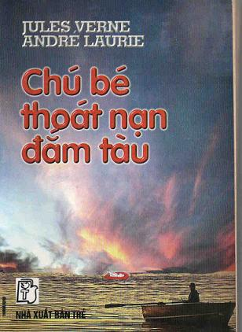

Tiểu thuyết "Chú bé thoát nạn đắm tàu”ra mắt bạn đọc Pháp năm 1885. Đây là cuốn tiểu thuyết duy nhất mà Jules Verne, nhà văn Pháp nổi tiếng thế giới về loại tiểu thuyết khoa học viễn tưởng và phiêu lưu mạo hiểm, viết chung với một tác giả khác.
Và đồng tác giả của Jules Verne là André Laurie, nhà văn, nhà chính luận nổi tiếng, người đã tham gia tích cực vào công xã Paris. Jules Verne (1828- 1905) nổi tiếng ngay từ tác phẩm đầu tay của mình. Sách của ông được dịch ra nhiều thứ tiếng nước ngoài, phát hành rộng rãi khắp nơi và được đông đảo mọi người, nhất là giới trẻ, háo hức đón đọc. Trong những năm 1970, so với các tác giả khác, số sách của J. Verne được xuất bản đứng hàng thứ ba trên thế giới. Không phải ngẫu nhiên mà ông được mệnh danh là “người bạn đường bất tử của tuổi trẻ.”
Sự nghiệp sáng tác văn học của J. Verne thật là vĩ đại. Trong cuộc đời 77 năm của mình, ông đã dành cho hoạt động văn học hơn 40 năm. Từ cuốn tiểu thuyết đầu tay được xuất bản năm 1862 đến khi qua đời ông đã hoàn thành bộ sách vĩ đại mà ông gọi chung là "những cuộc du hành lạ thường" gồm 63 tiểu thuyết và 2 tuyển tập truyện vừa và truyện ngắn được in thành 97 cuốn.
Các tác phẩm của J. Verne thường lấy đề tài từ những sự thật khoa học, những tiên đoán khoa học và những phát hiện về địa lý. Các nhân vật của J. Verne đều là những nhà bác học, kỹ sư, các nhà phát minh, sáng chế, các nhà du hành dũng cảm, quên mình vì lợi ích tiến bộ xã hội. Ta còn thấy trong các tác phẩm của J. Verne những con người lương thiện, nhân đạo và cao thượng, dám đấu tranh cho đạo lý cao đẹp của con người, chống chế độ áp bức, thực dân và bất công xã hội.
J. Verne sinh ra và lớn lên ở thành phố biển Nantes. Sau khi tốt nghiệp trường trung học, chàng J. Verne được cha gửi lên Paris học luật và trở thành luật sư. Tuy nhiên, J. Verne say mê văn học hơn. Vì vậy, mặc dù hành nghề luật sư theo ý cha, nhưng chàng đã dành nhiều thời gian để nghiên cứu, tích lũy các kiến thức về khoa học tự nhiên, thiên văn, hàng hải, lịch sử, kỹ thuật...Nhờ sự say mê và cần mẫn tích lũy kiến thức, về sau, J. Verne đã nảy ra ý định kết hợp văn học với khoa học và trở thành người mở đường viết "tiểu thuyết về khoa học" - một loại tiểu thuyết mới mà ngày nay chúng ta gọi là tiểu thuyết “khoa học viễn tưởng” rất được tuổi trẻ yêu thích.
Mùa Thu năm l962, lúc ấy J. Verne 34 tuổi. Ông hoàn thành cuốn tiểu thuyết đầu tay “Năm tuần lễ trên khinh khí cầu” nói về những khám phá địa lý giả tưởng ở châu Phi được thực hiện từ trên một khinh khí cầu do ông "thiết kế và chế tạo" ra.
Sau đó, một loạt tiểu thuyết khác của J. Verne: "Cuộc du hành vào lòng đất", "Những cuộc du hành của thuyền trưởng Hatseras ".. v.. v đã được đăng trên “Tạp chí giáo dục và giải trí” - một tạp chí lớn ở Pháp hồi ấy, rất được bạn đọc trẻ yêu thích. Sự thành công của J. Verne khiến ông chủ của tạp chí này đã ký trước với nhà văn những bản hợp đồng 20 năm, theo đó mỗi năm J. Verne đưa in 2 tiểu thuyết hoặc môt bộ tiểu thuyết gồm 2 tập. Và nhà văn đã thực hiện đúng hợp đồng đến cuối đời mình. Trong số những tác phẩm nổi tiếng nhất của J. Verne phải kể đến tiểu thuyết bộ ba: “Những đứa con của thuyền trưởng Grant”, “Hai vạn dặm dưới biển” và “Hòn đảo bí ẩn”.
Bằng lao động nghệ thuật sáng tạo. J. Verne đã góp phần cống hiên cho nền văn minh và tiến bộ của loài người. Đến nay, nhiều dự kiến, ước mơ của ông đã trở thành hiện thực...
Năm 1881, cũng trên "Tạp chí giáo dục và giải trí" nước Pháp xuất hiện một tác giả mới chưa ai biết - đó là André Laurie. Nhưng, chẳng bao lâu sau, cái tên ấy đã trở nên quen thuộc với độc giả. Tuy nhiên, tên ấy là bút danh, còn tên thật của tác giả là Pascal Grusse (1845-1909) - một nhà hoạt động chính trị, nhà bình luận nổi tiếng, đã từng tham gia Công xã Paris, người đã nhiều lần được C.Mác và F.Enghen nhắc đến trong các bài báo và thư của mình.
Pascal Grusse sinh trong một gia đình nhà giáo ở đảo Corse. Ông tốt nghiệp khoa Y ở Paris và rất say mê môn sư phạm, đặc biệt là vấn đề giáo dục lao động và thể lực cho tuổi trẻ. Pascal Grusse từng tham gia hoạt động chính trị, viết báo và năm 1870 là chủ bút báo “Marseillaise”, một tờ báo chủ trương đoàn kết các chiến sĩ đấu tranh cho nền cộng hòa, công khai lên án sự thối nát, phản động của chính phủ tư sản, công kích hoàng đế Napoleon III và phe cánh. C. Mác đã chăm chú đọc tờ "Marseillaise" và trong thư viết cho F.Enghen, người đã nhận xét: Pascal Grusse là "một người rất đắc lực, tính cách mạnh mẽ và dũng cảm". Sau đó, Pascal Grusse đã tham gia công xã Paris và trở thành ủy viên của Hội đồng Công xã, phụ trách ủy ban đối ngoại (Bộ trưởng ngoại giao). Tuy nhiên, cũng như nhiều người lãnh đạo Công xã Paris khác, ông chưa phải là nhà cách mạng vô sản.
Sau khi công xã Paris thất bại, Pascal Grusse bị bắt và bị đày ra đảo Calédonia Mới. Năm 1874, ông đã vượt ngục sang sinh sống ở Úc, rồi ở Anh. Năm 1880, sau khi được ân xá, ông trở về Pháp và được mời cộng tác với "Tạp chí giáo dục và giải trí". Và dưới bút đanh André Laurie, ông đã cho ra mắt bạn đọc nhiều cuốn sách, tiểu thuyết và và truyện vừa, trong đó, thành công nhất là loạt sách nhiều tập "Sinh hoạt học đường ở tất cả các nước", đề cập những quan điểm sư phạm mới của ông. Các tiểu thuyết phiêu lưu mạo hiểm “Thuyền trưởng Trafalgar", "Người kế tục Robinson” và tiểu thuyết khoa học viễn tưởng “Từ New York đến Brest trong 7 giờ" của ông, ngay sau khi ra mắt đã được dư luận bạn đọc đánh giá cao.
“Chú bé thoát nạn đắm tàu” thuộc số tiểu thuyết thành công của cả hai tác giả.
Thực ra, người đầu tiên nảy ra ý định viết cuốn tiểu thuyết này là André Laurie. Nhưng vốn cảm phục J. Verne, "bậc thầy" về loại truyện phiêu lưu mạo hiểm và khoa học viễn tưởng, và để cho cuốn tiếu thuyết có đầy đủ những kiến thức địa lý phong phú, nhất là những kiến thức địa lý về vùng bắc cực. Anđré Laurie đã mời J. Veme viết chung.
Cuốn sách tuy không dày, nhưng nội dung súc tích. Nó vừa là tiểu thuyết phiêu lưu mạo hiểm, vừa là tiểu thuyết khoa học viễn tưởng được viết khá hấp dẫn.
Nội dung chủ yếu của tiểu thuyết kể về số phận của một chú bé mới 7-8 tháng tuổi, tình cờ sống sót trong vụ đắm tàu "Cintia". Chú được một người đánh cá nghèo Na Uy tìm thấy trong một chiếc nôi để trên phao bị sóng đánh trôi vào một vịnh biển, và đem về nuôi nấng. Hai vợ chồng người đánh cá thương yêu, chăm sóc chú bé như con đẻ, đặt tên cho chú là Êrik. Êrik lớn lên mạnh khỏe, đặc biệt rất thông minh. Thế nhưng "tổ quốc của mình là đâu?", "cha mẹ của mình là ai và có còn sống không?", "vì sao mình bị trôi dạt vào vùng biển này?” Đến khi lớn lên Êrik cứ day đứt với những câu hỏi ấy. Và, bác sĩ Svariênkrôna, một người nổi tiếng ở Xtôckhôm, với tấm lòng nhân đạo cao cả của mình, đã nhận đỡ đầu cho Êrik ăn học đến nơi đến chốn và tìm mọi cách giúp chú trả lời những câu hỏi đó. Bác sĩ và bản thân Êrik đã vượt qua biết bao trở ngại, thử thách do thiên nhiên hà khắc, do sự xảo quyệt và ti tiện của những kẻ bất nhân gây ra, quyết tâm đạt mục đích của mình…
Phần có ý nghĩa nhất của tiểu thuyết là cuộc hành trình thám hiểm bắc cực của tàu "Aljaska" do thuyền trưởng Êrik chỉ huy, thực hiện những cuộc phiêu lưu trên vùng băng trôi, lập nên chiến công địa lý vĩ đại: đi vòng quanh thế giới trên vùng biển bắc cực của nước Nga và nước Mỹ, trong một hành trình đã khai phá thành công hai con đường biển Đông bắc và Tây bắc mà trước đó chưa ai làm được. Chính sự vinh quang của chiến công vang dội này đã đem lại cho Êrik niềm hạnh phúc lớn lao: Trở về tổ quốc và đoàn tụ với người mẹ thân yêu đã hơn hai mưoi năm mỏi mắt đợi chờ, hy vọng có ngày găp lại đứa con trai duy nhất của mình bị mất tích trong tai nạn đắm tàu “Cintia” đầy bí ẩn.
Hình tượng Êrik trong tiểu thuyết đã chinh phục người đọc từ những trang đầu tiên. Chàng thanh niên thông minh tỏ rõ tính cách mạnh mẽ, dũng cảm trong mọi hành động, vững vàng vượt qua mọi thử thách gay go, trở thành một người anh hùng thật sự.
Các tác giả cũng đã khắc họa đậm nét hình ảnh đáng yêu của những con người bình thường đã góp phần giáo dục, dạy dỗ, nuôi nấng Êrik từ tấm bé. Bác Hecsêbom và bà Katrina, thầy giáo Maljarius, Ôttô và Vanda thể hiện những phẩm chất đẹp đẽ nhất của con người. Không phải ngẫu nhiên mà các tác giả đã xây dựng nên sự “đối chọi” giữa tính cách khiêm tốn, thông minh của Vanda, một cô gái nông thôn chịu thương chịu khó, và thói kênh kiệu khinh người của Kaisa, một cô gái thủ đô được nuông chiều.
Mọi nỗi bất hạnh, rủi ro giáng lên số phận của Êrik và những người bạn của chàng, xét cho cùng, đều do hậu quả của những hành vi tội lỗi của Noi Giôns, một tên đại diện của thế giới tư bản bóc lột Mỹ bạo tàn, và tên thủy thủ Padric Ô Đômôgan, một công cụ ngoan ngoãn trong tay tên tội phạm Noi Giôns ấy.
Nhưng, những tình cảm cao thượng, sự trung thực, lòng quyết tâm đạt mục đích đã giúp Êrik chiến thắng mọi thế lực hung ác, bạo tàn. Và, tên Noi Giôns đã trở thành nạn nhân của chính những quỉ kế dã man do hắn gây ra.
Cho dù tội ác được cố tình che đậy như thế nào thì trước sau nó cũng sẽ bị phơi bày và công lý sẽ chiến thắng - đó là điều quan trọng mà cuốn sách đã khẳng định với chúng ta.
Xin trân trọng giới thiệu với bạn đọc tiểu thuyết “Chú bé thoát nạn đắm tàu” của hai tác giả Pháp nổi tiếng Jules Verne và André Laurier, và hy vọng rằng tác phẩm sẽ đem lại cho các bạn sự hài lòng.
Trong việc dịch thuật chắc chắn không tránh khỏi những thiếu sót, chúng tôi mong được các bạn đóng góp cho những ý kiến xây dựng.
NGƯỜI DỊCH